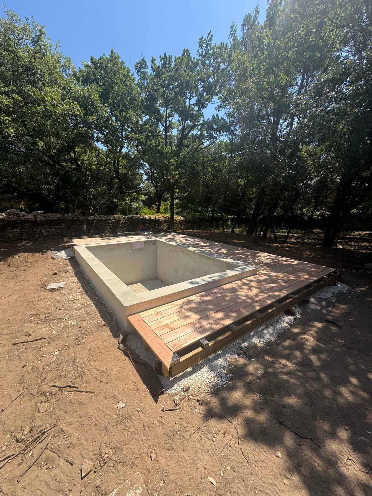
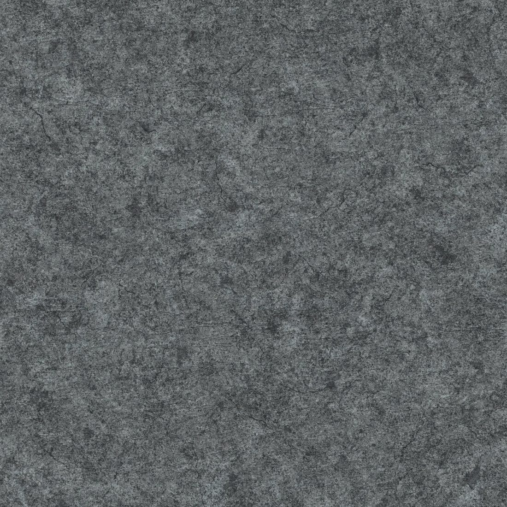
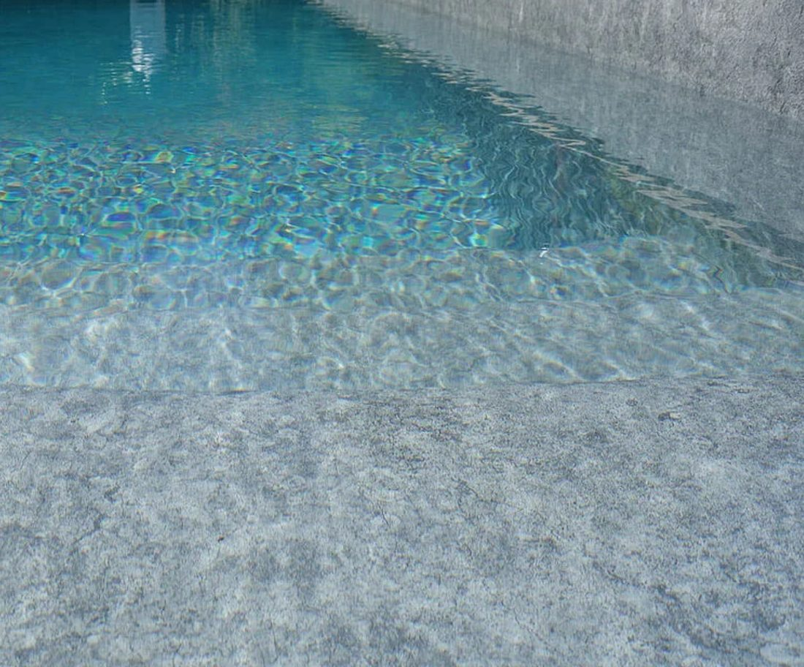

Chantier · Saint-Restitut (26)
Construction neuve d'une piscine en membrane PVC armée à Saint-Restitut
Un bassin maçonné traditionnel 3 × 4, type provençal, étanchéifié par une membrane PVC armée effet pierre naturelle granit grey (CGT Alkor). Posée sur la coque en dur une fois coulée et talochée, soudée à chaud lé après lé.
- Lieu
- Saint-Restitut (26)
- Type
- Construction neuve
- Bassin
- 3 × 4 m, maçonné
- Membrane
- CGT Alkor · granit grey

Le chantier
Du bassin brut à la mise en eau, en 4 étapes
-
Le bassin maçonné
Coque traditionnelle coulée et talochée, construction neuve, esprit bassin provençal.
-

La membrane
CGT Alkor effet pierre naturelle granit grey, soudée à l'air chaud lé après lé.
-

Mise en eau
Membrane soudée et contrôlée, puis mise en eau progressive du bassin.
Bassin terminé
Plage en bois, margelles en pierre claire, écrin de chênes verts. Cliquez sur la photo pour comparer avant / après.
Votre projet
Un projet similaire en tête ?
Devis gratuit sous 24h. Appelez-nous pour un tarif personnalisé, ou laissez-nous vos coordonnées.